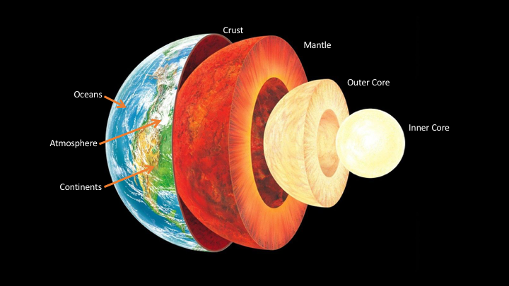
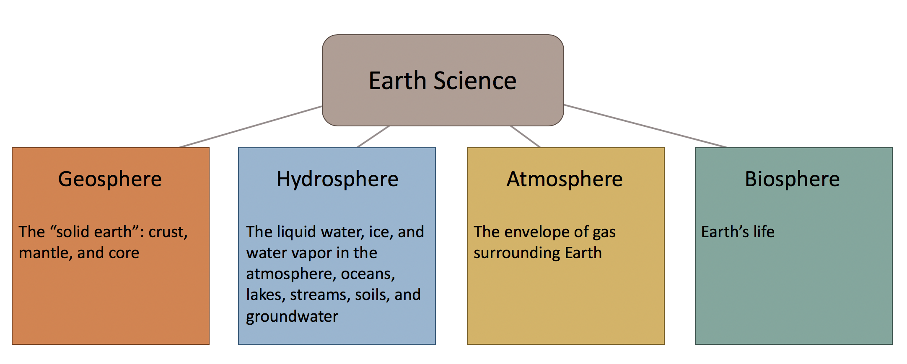
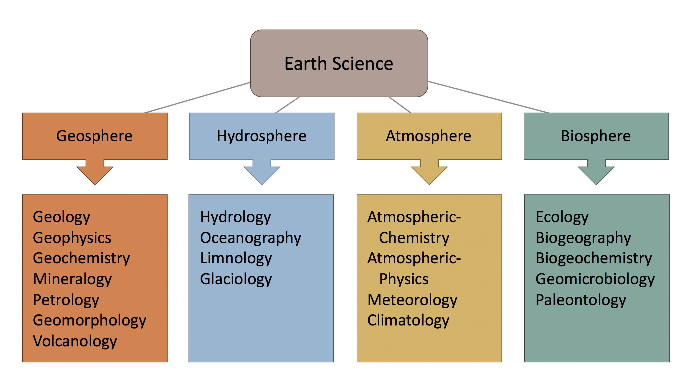

Welcome to PyEarth¶
A Python Introduction to Earth Science!
This course uses Python programming and Jupyter Notebooks along with real-world observations to introduce students to Earth phenomena and their underlying physics. Students will learn how to access and visualize the data, extract signals, and make probability forecasts. The final module is a research project, of the students’ own design, that synthesizes the course material.
Course materials can be found on the bCourses page:¶
About this Book¶
This book is organized by week, going along with the pace of EPS 88. Each chapter will cover some relevant data science, python programming, and earth science concepts but is not intended to be exhaustive on any of these topics. We have tried to include video clips and external links to pertinent materials to keep student attention and reinforce ideas. The text for this course is written by the instructors, so please forgive any typos or errors.
Why Study the Earth?¶
Earth is an ever-changing, complex system of interacting rock, water, air, and life. Humans depend on Earth for resources and are affected by natural-hazards. Earth scientists make observations and conduct experiments to understand Earth’s complexities, and use their understanding of past processes to forecast future conditions.

Figure 1: The internal structure of Earth. Source: modified from Gary Hincks/Science Source SS2410099.
Earth has four major systems: the geosphere, hydrosphere, atmosphere, and biosphere. Each of these systems forms a branch of Earth Science, made up of many subdisciplines of scientists who use a variety of tools and techniques to study Earth.

Figure 2: The four earth systems.

Figure 3: Example earth science subdisciplines.
This semester of EPS 88 we will focus on the geosphere, made up of Earth’s crust, mantle, and core. Again, this branch of Earth Science is made up of many subdisciplines of scientists who use a variety of tools and techniques to study the Earth. Geoscientists make observations of earth materials and of the dynamic evolution of Earth as mass and energy are cycled between systems. Geoscience is highly interdisciplinary because its subdisciplines have complementary approaches and because Earth’s systems are so interconnected. Gaining knowledge of a broad-base of geoscience fields and practicing many techniques will make students of EPS 88 more capable earth scientists.
How do Geoscience and Data Science work together?¶
As with many fields of science access to digital instrumentation and high-power computing capabilities are rapidly changing the methods used by geoscientists. The amount of data being collecting is growing, and the systems of equations are growing in number and complexity. Data science and programming skills make students more employable and, more importantly, better scientists.